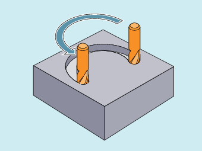

Die Kreisinterpolation ermöglicht die Herstellung von Vollkreisen oder Kreisbögen.
Anwendungsbeispiel: Fräsen einer kreisförmigen Nut
Die Steuerung bietet verschiedene Möglichkeiten, Kreisbewegungen zu programmieren. Damit kann der Anwender praktisch jede Art der Zeichnungsbemaßung direkt umsetzen:
Kreisinterpolation mit Mittelpunkt und Endpunkt (G2/G3, X... Y... Z..., I... J... K...)
Kreisinterpolation mit Radius und Endpunkt (G2/G3, X... Y... Z..., CR)
Kreisinterpolation mit Zwischen- und Endpunkt (CIP, X... Y... Z..., I1... J1... K1...)
Kreisinterpolation mit tangentialem Übergang (CT, X... Y... Z...)
Die Steuerung benötigt zur Berechnung des Kreisdrehsinns, mit G2 im Uhrzeigersinn oder G3 gegen den Uhrzeigersinn, die Angabe der Arbeitsebene.
Ausnahme:
Es ist auch möglich, außerhalb der gewählten Arbeitsebene Kreise herzustellen (nicht bei Öffnungswinkelangabe). In diesem Fall bestimmen die Achsadressen, die der Programmierer als Kreisendpunkt angibt, die Kreisebene.